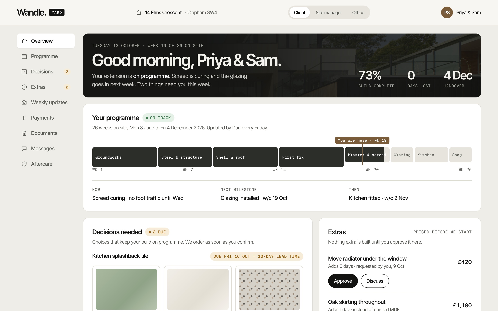
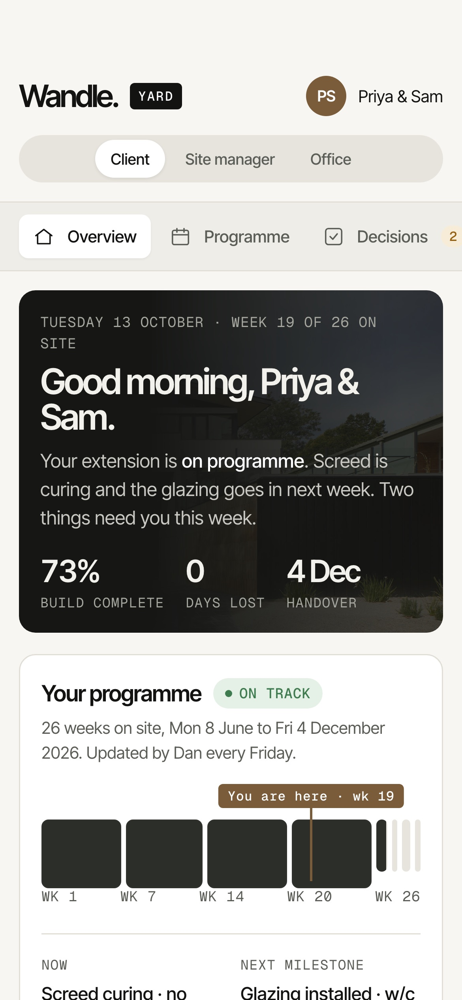
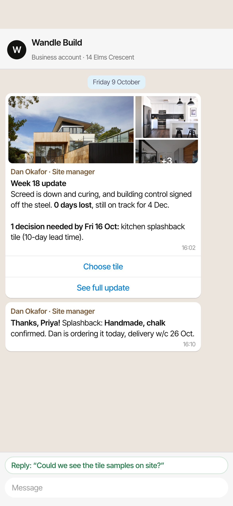
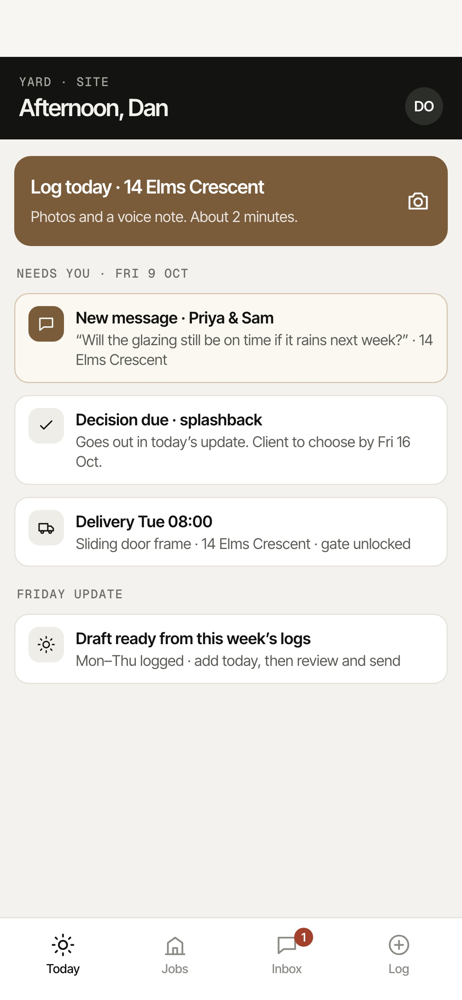
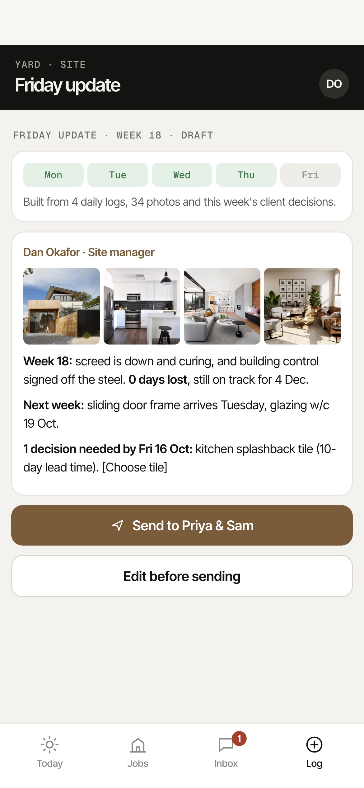
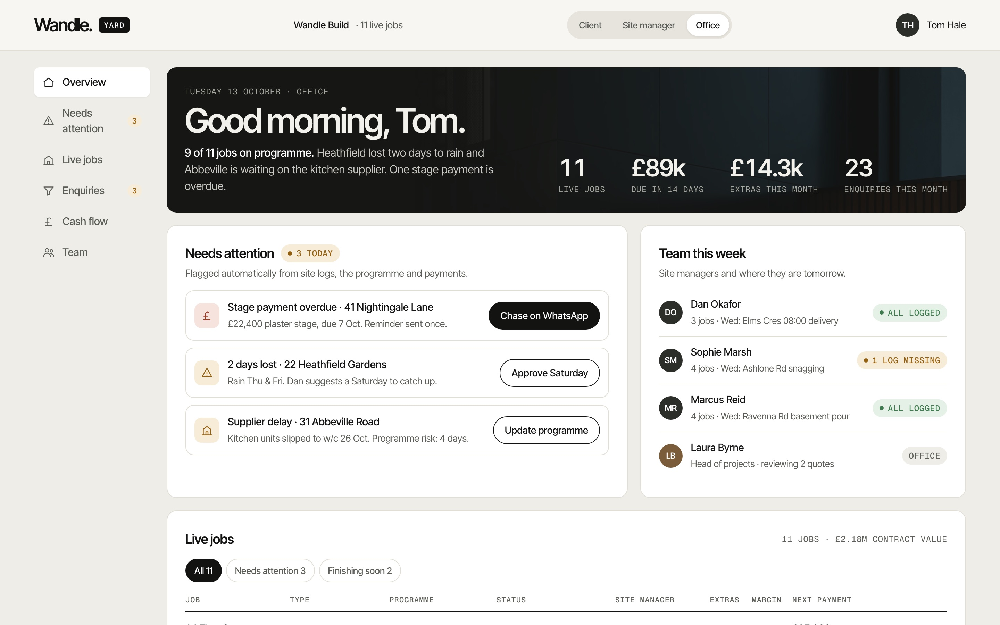
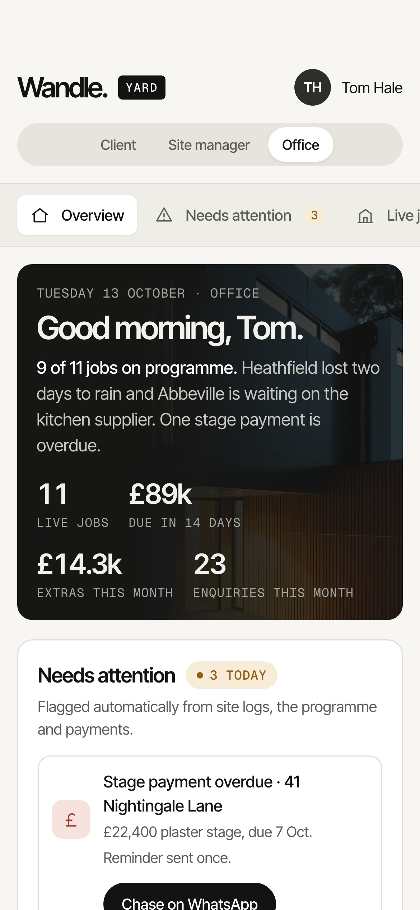

A custom system by 2204 Labs
One system. Every screen.
Wandle's website promises weekly photo updates, a live programme and a fixed price. Wandle Yard is the system that keeps those promises — for the homeowner, the site manager and the office, on whatever screen they're holding.


1For the homeowner
Never chase the builder for an update again.
Six months, £200k and a house you can't live in — with updates that depend on someone remembering to text you.
Every Friday the update arrives on WhatsApp with photos. Decisions and priced extras are one tap away, already signed in.

2For the site manager
Friday's write-up, from two hours to ten minutes.
Evenings spent turning 200 WhatsApp photos into client updates, and snag lists on paper in the van.
Two minutes a day — photos and a voice note. Everything files itself to the right job and Friday's update drafts itself.


3For the office
Every job, every enquiry, every pound — on one screen.
Eleven live jobs in a spreadsheet, extras agreed in conversation and never billed, enquiries left in an inbox.
Jobs at risk flag themselves, extras are priced and approved in writing, and every website enquiry lands in the pipeline.


How it fits together.
- Website enquiry“Book a site survey” on the website lands in the office pipeline.
- Contract signedThe office adds the job. The client gets a WhatsApp invite to their portal.
- On siteThe site manager logs each day in two minutes from his phone.
- Every FridayThe update drafts itself and goes to the client on WhatsApp.
- After handoverThe portal stays open for the 10-year warranty and home manual.